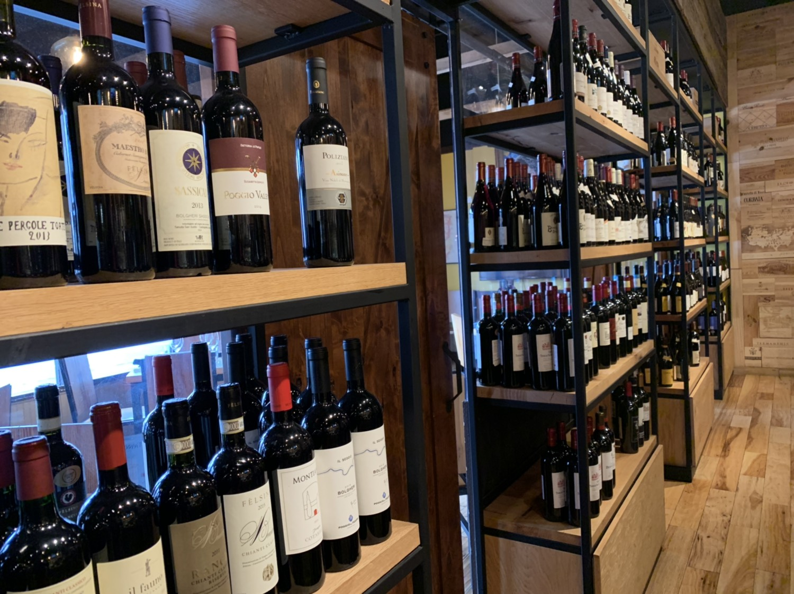
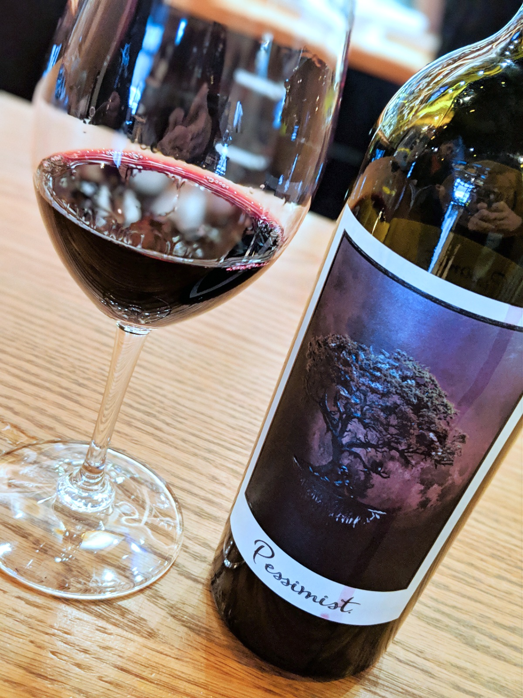
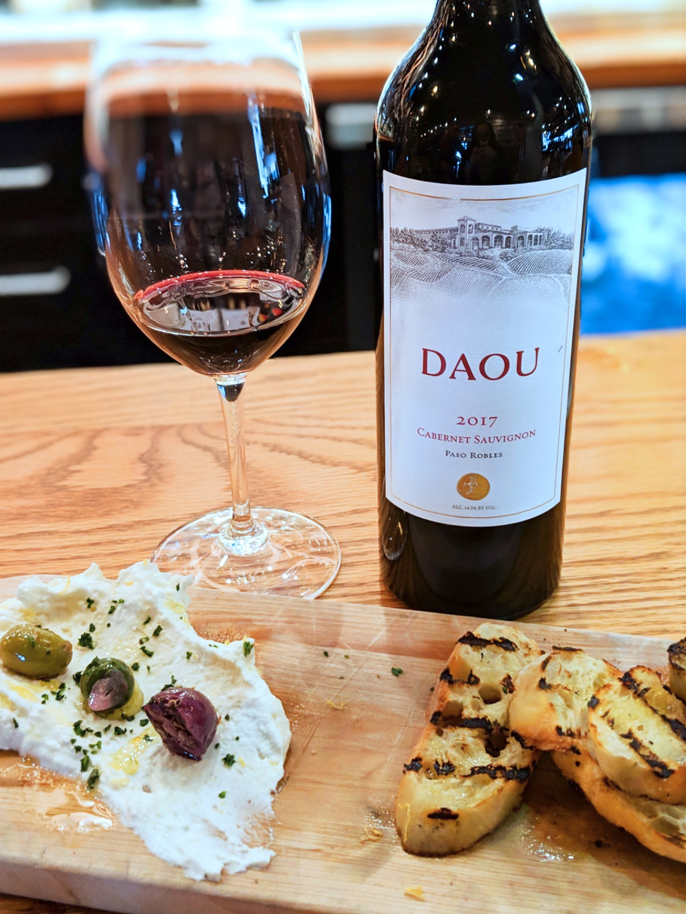
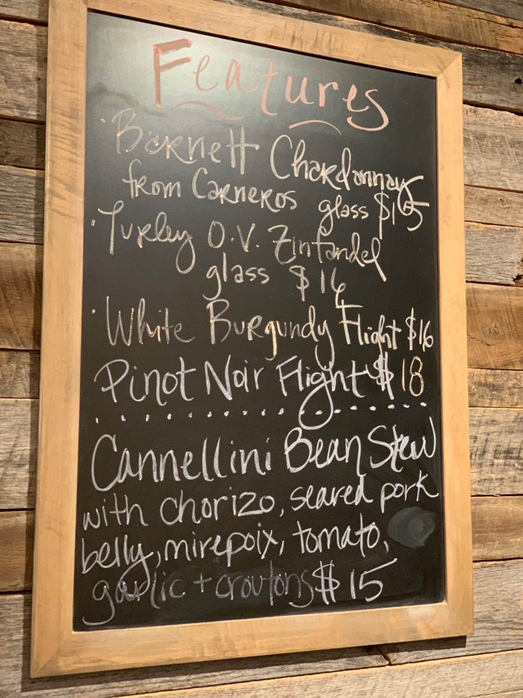

Foxcroft
A Wine Bar With Vast Selection
Note: This article was first posted on December 20, 2019 here
Walking into Foxcroft you are immediately drawn in by all the bottles lining the walls. The selection was wide ranging from the familiar regions of Italy, Spain, France, and Argentina, while also providing options from lesser known regions in South Africa among others. The staff are knowledgeable to help you find the perfect wine for you amount the vast selection.
After browsing the wine selection a bit we took our seats at the bar. We were informed that for bottles under $29.99 there is a $10 corkage fee, while there is no corkage fee for those $29.99 and up. The bottles are sold at retail price (plus the corkage if applicable) making prices to drink a bottle at the shop very reasonable. We decided to start with a bottle of the Pessimist by Daou. It was well balanced with complexity filled with fruit and spice. My husband said he picked up aged salami as well. After sitting on some wine for a bit, it was time for some food.
 Foxcroft sets itself apart with staff knowledge as well as a completely made from scratch menu. We decided to go for the housemade ricotta. It went nicely with the wine and was delicious. The full kitchen opens at 5PM daily, but cold appetizers such as the ricotta and charcuterie are available all day. The full menu includes flatbreads, appetizers, and a selection of signature dishes including sliders, scallops, and braised beef short rib.
Aside from bottles of wine, glasses of wine are available in 3 and 6 ounce pours. You always have the option to make up your own flight using 3 ounce pours, but sometimes Foxcroft also has a featured flight. Make sure to check the chalkboard or ask your server. Draft beer is also available. The selection is mostly local and rotates frequently.
In addition to the location in Dilworth, Foxcroft has a second location in South Park. They also have space for private events.
Dilworth Location and hours:1235 East Blvd #I, Charlotte, NC 28203
(704) 602-2133
Sunday 5PM – 10PM | Monday-Saturday 10AM-11PM Pro Tip: Get a bottle and share with friends of take the remainder home. There is no corkage fee for bottles $29.99 and up. Finding a bottle at $30 will save you a few dollars per glass of wine and likely yield better quality.
 Need to know:
- There is a wine club for $60/month with a 6 month commitment. Foxcroft will select 2 bottles for you each month. In addition, there is a monthly tasting that is free for members ($5 for non-members) and members will receive 15% off cases of wine.
- All wines can be ordered in 3 ounce or 6 ounce pours.
- Wine Dinners are held once a month typically based around a single winery. Staff from the winery is usually there to talk about the wine and answer questions.
- Full Kitchen opens at 5PM.